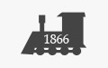

 Локомотиворемонтний завод
Місце проходження технологічної переддипломної практики
Поруч із найстарішим залізничним вокзалом України у нашому місті розташований локомотиворемонтний завод заснований у 1866 році. Фактично це є найдавніше машинобудівне підприємство області. Доречі, наше місто стало важливим залізничним вузлом, ще тоді коли у Японії не було жодного метра залізниці (для тих кому цікаво, перегляньте фільм "Останній самурай" - будівництво залізних доріг розгорнулося у 1880рр.).
Випускник КМВ 2006 року Ігор Олексюк - інженер-конструктор